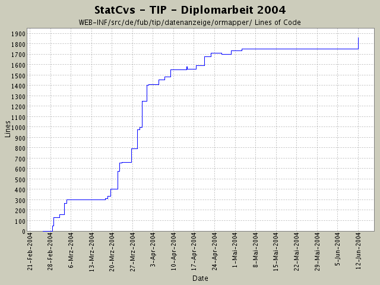

Summary Period: 2004-02-25 to 2004-06-11
[root]/WEB-INF/src/de/fub/tip/datenanzeige/ormapper

Total Lines Of Code:
1859 (2004-06-13 13:05)
| Author | Changes | Lines of Code | Lines per Change |
|---|---|---|---|
| hirsch | 92 (100.0%) | 2253 (100.0%) | 24.4 |
Alle VOs sind jetzt in ihren toString()-Methoden
ohne NullPointer-Aufkommen - damit kann man auch halbgeladene
Bohnen ausgeben und kriegt keine Fehler mehr !
150 lines of code changed in:
city und country wurden nicht auf isNull() geprüft! in toString()-Aufruf,
zusätzlich jetzt logger eingebaut, um zu sehen, ob das der letzte Aufruf in catalina.out ist!
12 lines of code changed in:
toString()-Methode nun garantiert ohne NullWerte gemacht!
15 lines of code changed in:
Rechtschreibfehler beseitigt in Titelseite, die auch im Anhang ist
2 lines of code changed in:
toString von locationVo angepasst
5 lines of code changed in:
Tippfehler in LocationVO hat Anzeige des Bildes verhindert -
der Getter hiess getPic und sollte getPicture heissen :-)
2 lines of code changed in:
jetzt wird ein Bild angezeigt, wenn der eingegebene Ort in der
Datenbank gefunden wird.
Dazu die Datenstruktur umgebaut und das Bild mit in das LocationVO
reingepackt. Ist sauberer als ein SightVO zu nehmen, da man die Anzeigen nicht wirklich haben möchte, die in einem SightVO mit drinstecken
(verbraucht auch zu viel sinnloisen Speicherplatz)
18 lines of code changed in:
TopicVO an neue HTML-Checkbox Struktur angepasst (attribut aboStatus)
Bean zur Anzeige umbenannt, da es sowhl zur Topic- als auch zur SightGruppenAnzeige benutzt wird -
ist ebend OO ;-.^
43 lines of code changed in:
EventhistorienAnzeige für Benutzer integriert,
Umwandlung der EreignishistoryAction in eine DispatchAction
zur einfacheren Anzeige
1 lines of code changed in:
Schreiben eines veränderten Sehenswürdigkeits-
gruppenprofils implementiert - kann noch nicht
getestet werden, da die Anzeige noch nicht hinhaut.
1 lines of code changed in:
Profiländerungsrümpfe implementiert -
Änderung im VO-Objekt -> neues Feld
aboStatus, dass diese Logik kapselt. Ist zwar ein wenig
dreckig aber besser als in der VIEW rumzuscripten
oder neue Klassen (VO+Container) zu haben.
37 lines of code changed in:
SightGruppeVO + Container + Anzeige implementiert.
Darstellung angepasst (JSP-Seiten, andere ResourceBundle Inhalte)
97 lines of code changed in:
Anlegen diverser neuer Rümpfe zur Implementierung
neuer Aktionen jeweils mit:
* Action
* LogicObjekt
* LogicFactory und wenn fehlend:
* VO und
* VOContainer.
34 lines of code changed in:
ThemenBearbeiter:
aufgesplittet in 2 Ergebnisse für Themen des Benutzer:
a) alle abonnierten
b) alle nicht abonnierten.
HTML-Seite angefangen.
2 lines of code changed in:
SQL-Logik bei Themenanzeige - irgendwie ist dieses
Datenmodell manchmal so gruselig ...
ich frage mich, was wofür da ist und was der
eigentliche Sinn hinter Tabellen ist, die zwei IDs
zusammenbringen.
35 lines of code changed in:
StatusAnzeige implementiert :-) JUCHHE!
Logik und Actions sind komplett fertig.
64 lines of code changed in:
VO:
alle ViewObjekte implementieren jetzt auch
java.io.Serializable - nur so geht später mal RMI!
Anonsten Umstrukturierung und Javadoc in action-Package -
Unterpakete angepasst an Menüstruktur
(nur Skelett gelegt, noch nichts geändert)
48 lines of code changed in:
StandoirtPruefer:
SQL eingefügt und Parameterladen angepasst
4 lines of code changed in:
Refactoring - Anpassen von JavaDoc,
Entfernen von LoggingAufrufen.
StandortPruefer:
jetzt wird auch für die Eingabe von Koordinaten in der DB
nach einerm Standortbezeichner gesucht.
12 lines of code changed in:
komplettes Dokumentieren der einzelnen Packages nach dem heute
rausgefundenen Schema von SUN -
juchhe!
Viel Tipparbeit - aber jetzt sieht das Javadoc-Resultat
wenigstens wie eine Anwendung aus.
Die neue statcvs-Version ist auch sehr gut!
48 lines of code changed in:
(33 more)
Generated by StatCvs v0.2-dev